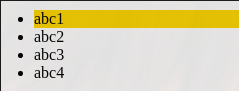
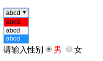
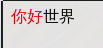

| 伪类标签 | 含义 |
|---|---|
a:link |
普通的、未被访问的链接 |
a:visited |
用户已访问的链接 |
a:hover, p:hover, #id:hover |
鼠标指针位于链接的上方 |
a:active, p:active, #id:active |
链接被点击的时刻 |
E:not(#p1) |
所有的<E>标签，除了id为p1的 |
E:first-child |
父类的第一个子级，如li:first-child表示选择所有作为第一个子级的li |
E:last-child |
父类的最后一个子级，如li:last-child表示选择所有作为最后一个子级的li |
E:only-child |
只有一个子级，如li:only-child表示选择li，且它的同级必须只有一个li |
E:empty |
匹配为空的<E>标签 |
E:checked |
匹配用户界面上处于选中状态的元素<E>，用于input type为radio与checkbox时，或<option> |
| 伪对象标签 | 作用 |
|---|---|
E::before |
在<E>前面添加内容 |
E::after |
在<E>后面添加内容 |
当为链接的不同状态设置样式时，请按照以下次序规则：
a:hover 必须位于 a:link 和 a:visited 之后
a:active 必须位于 a:hover 之后first-child实例
1
2
3
4
5
6
7
8
9
10
11
12
13
14
15
16<head>
<style>
/*注意不是ul:first-child*/
li:first-child{
background-color: gold;
}
</style>
</head>
<body>
<ul>
<li>abc1</li>
<li>abc2</li>
<li>abc3</li>
<li>abc4</li>
</ul>
</body>
效果

- checked实例
1
2
3
4
5
6
7
8
9
10
11
12<head>
<style>
option:checked{
background-color: red;
}
/* +表示同级 */
input:checked+span{
color: red;
}
</style>
</head>
</body />
效果

- 伪对象标签
1
2
3
4
5
6
7
8
9
10
11
12<head>
<style>
p::before{
content: "你好";
color: red;
}
</style>
</head>
<body>
<p>世界</p>
</body>
</html>
效果
